Traumepatienten
Dan siger godmorgen
Vi kører med 4 underviser på flere computere. Den tekniske chat er åben
Introduktion
Traume team 1 = Søren (anæstesi) + Niels? Neurokir? Traume 2 er Kir EMmma = MT-kirurg snakker lidt svensk. ATLS-tosse. TRaume 2 Mette er thoraxkirurg.
Traume 1? NK = Niels?
- Dette er kursus i hvordan I skal forholde jer som KBU-læge.
- IKKE TRAUMEKURSUS til RH *
Fra facitlisten - EKSAMENSFIFS.
Uddyber anamnese/skadesmekanisme
Erkende at pt er potentielt multitraumatiseret
Korrekt prioritering . primær gennemgang ABCDE + akutte blodprøver incl bastest + Rig col cerv, thorax bækken, UL abdomen (FAST)
A: frie luftveje
B: st p et c. RF, perkussion, beh af pneumothorax, 02 L C: iv adgange, shocktyper, behandling hypovolæmi, transfusionsstrategi, udredning blødningskilder (thorax, abdomen, UL, bækken, frakturer)
D GCS vurdering, pupiller, bevægemønster
E: fuldstændig afklædning og undersøgelse, en bloc vending, forebyggelse af hypotermi
"Sek gennemgang inc! CT scanning, tidspunkt, rioriterin;
Overvejelser vedr. lokale beh. muligheder vs
overflytning af patienten (obs bagvagt)
'Stabilisering før overflytning, konf med medfølende afdeling, checkliste mv.
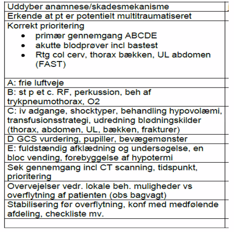
Case 1 omkring Ballerup
- Blevet påkørt af lidt større SUV ca. 70 km. Bil skubbet 10 m.
- 72 år
- Vågen på skadested
- Bule i panden
- Perifert kold
- Vejer 120 kg
- Klager over smerter
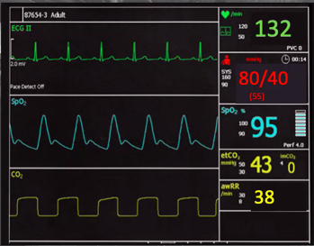
- Breakout
- Er denne pt svært tilskadekommen?
- Det tror jeg nok.
- Ikke de fineste værdier.
- Hypotensiv.
- Højenergi. Bløder.
- hvad fejler pt?
- Bækkenfraktur
- Pneumotohrax?
- hvad vil i forberede på hospitalet?
- Akut pakke klar
- Medicin klar?
- IV-adgange?
- Tranexamsyre
- Traumeteams
- O-kir
- G-kir
- Anæstesi
- Er denne pt svært tilskadekommen?
forsat...
- Ved ankomst til Akutmodtagelse er: BT 90/60 mm Hg, puls 122
- På væskebehandling stiger til: BT 118/88 mm Hg, puls 90
- Efter 15 minutter pludseligt fald til: BT 96/66 mm Hg.
- Hvad er den MEST sandsynlige årsag ?
- Traumatisk hjerneskade
- Pågående/vedvarende blødning
- Hjertekontusion
- Utilstrækkelig væskeresusciation
- Trykpneumothorax
Nogle tal om traumer
2500 i DK årligt 1500 i RegSP 950 af disse på RH.
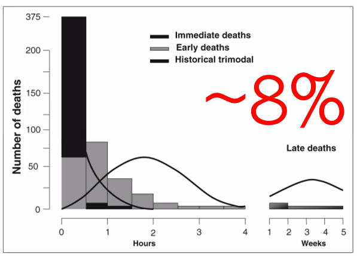
- 8 pct dør af traume
- Trimodal fordeling
- På skadested med det samme
- Af blødning timer efter
- Uger efter af følger
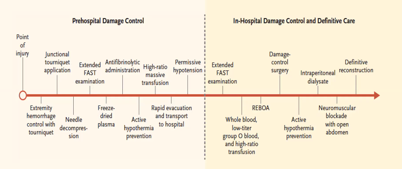
De vi skal fokusere på er primær gennemgang
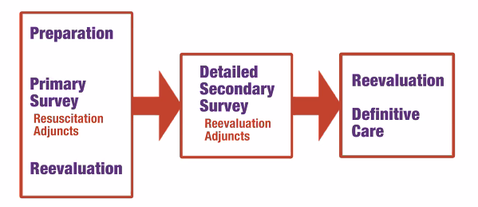
- Primær gennemgang <- vi kigger på dette i dag.
- Sekundær gennemgang
- revalueringl
Primær traumegennemgang
- ABCDE
- A: Airway and cervical spine controle
- C: Circulation and haemorrhrage controle
- tingene foregår parallelt - teamarbejde
- der er et kompliceret slide.
- så siger man højt C-problem og så fokusere alle på det
10 sekunder
- Hej - hvordan har du det? Jo tak godt =>
- A,
- lidt B - der er luft,
- C okay
- D hjernen okay
- 18-06-2020 08:39 *
Fem patienter
Sort patient
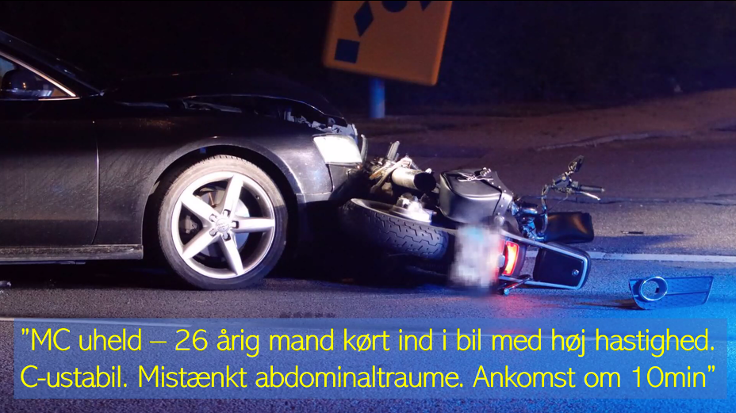
18-06-2020 08:41 * MC uheld - * 26 årig mand kørt ind i bil med høj hastighed. * C-ustabil. Mistænkt abdominaltraume. Ankomst om 10min
Emmas kir-snik-snak
- Man skal forberede sig
- KIRURGER KSAL HAVE STYR PÅ ANATOMIEN
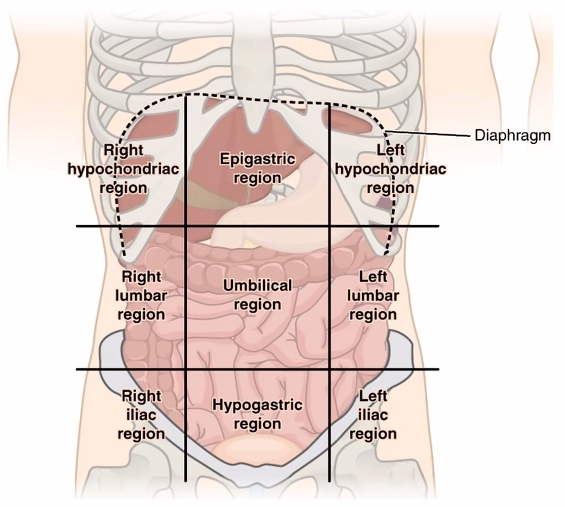
- Abdomen starter ved papil-niveau. Lever, milt, ventrikel ligger oppe under ribben
- Tarmene ligger under spina iliaca.
- Pandoras æske ?
- Der er rigtig store kar. "grimme ting"
- Vena cava, aorta.
- Pancreas (caput) og duedenum. Surgeons soul.
- Skadesmekanisme - hvilken skade kan man forvente?
- Penetrerende eller stumpe?
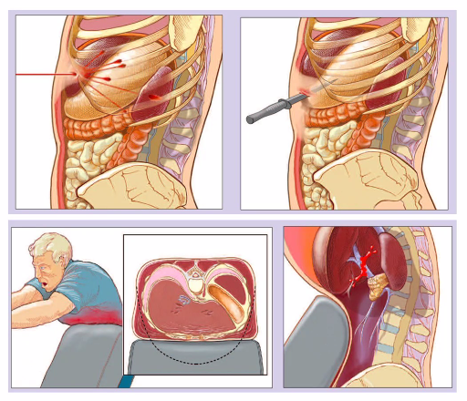
- Sikkerhedssele traume. trepunkt. sele holder fast, men organer lever milt river sig væk fremad. av.
Case forsat
En 26årig man inbriges til akutmodt efter motorcykelstyrt.
Han råber og skriger ” jeg kan ikke bevæge mine ben!""
Objektiv undersøgelse af thorax, abdomen og bækken er normal. Han bevæger begge arme, men han har ingen sensiblitet i benene og han kan ikke bringes til at bevæge dem
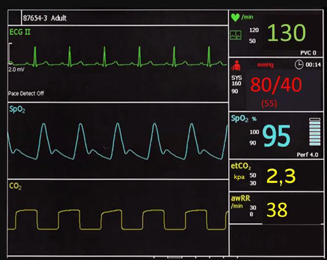
BT 80/40 p130, SAT 95, RF38
- Hvad er den sandsynlige årsag?
- neurogent shock 60%
- Jaja, men der er vigtigere ting.
- Neurogent shock
- Der burde være lavere puls.
- hjertetamponade 0%
- myokardiekontusion 0%
- hypertermi 0%
- abdominal blødning 40%
- This! Det er pisse farlige.
- neurogent shock 60%
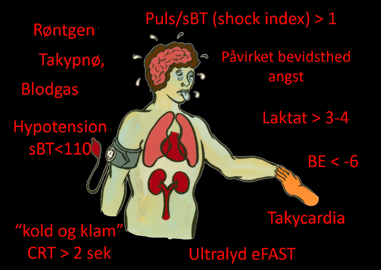
hvorfor skal man få mistanke om at denne patient er i shock
Start 2. time
Traumer og typer og shock
18-06-2020 09:18 Kom lige lidt sent ind
- Neurogene shock: sjældend..
- Forvrring: neurogent eller spinalt shock
- spinale shock giver kardilatation, påvirkning af medualla + sensorisk og motoriske. paradokse respiration. lave cervikale traumer. man kan bruge diaphragma men ikke intercostal, derfor paradox respiration.
- spinale shock.. er noget andet?! 18-06-2020 09:20
- spinale shock giver kardilatation, påvirkning af medualla + sensorisk og motoriske. paradokse respiration. lave cervikale traumer. man kan bruge diaphragma men ikke intercostal, derfor paradox respiration.
- Shock er et kredsløbsting.
- En traumepatient er blødende til andet er bevist.
- Man kan bløde fra
- femur: 1,5 L
- Bækken: hele blodvolumen, der er mange kar.
- Milt: til abdomen
- Lever: abdomen..
- Krøsblødning: det kan også ske.
Her bløder man meget fra - så man bløder "ned"
- 18-06-2020 09:22
- C - Chest
- (H) - Head
- børn især.. Man kan godt bløde ned fra skalplæsion.
- A - Abdomen
- R - Retroperitoneum
- T - Thighs
- S - Street
- Det er gulvet.
Shock-klasser
Buzy slide - skal man IKKE KUNNE - 18-06-2020 09:25
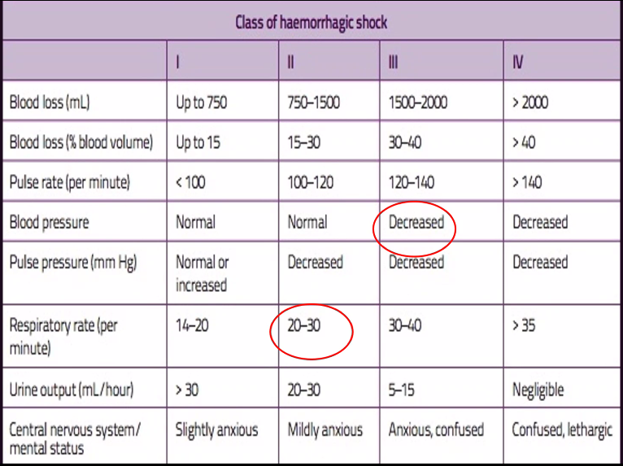
- Klasse 1
- Klasse 3-
- Parametre man normalt kigger på, kommer sent. BT og RF.
Apunktur.
- Laktat stiger
- Forhøjet lakat hos 26 årig, så er Emma bekymret.
- Udvikling i laktaten over halve-hele time.
- Hgb
- Udvikler sig langsommere, blodet skal først fortyndes
- Man bløder jo fuldblod.
- Hgb vil være normal initielt.
- Pop-smart: Hvis du hælder en halvdelen af en cola ud, så er halvdelen stadig cola, ikke zero.
Rtg thorax
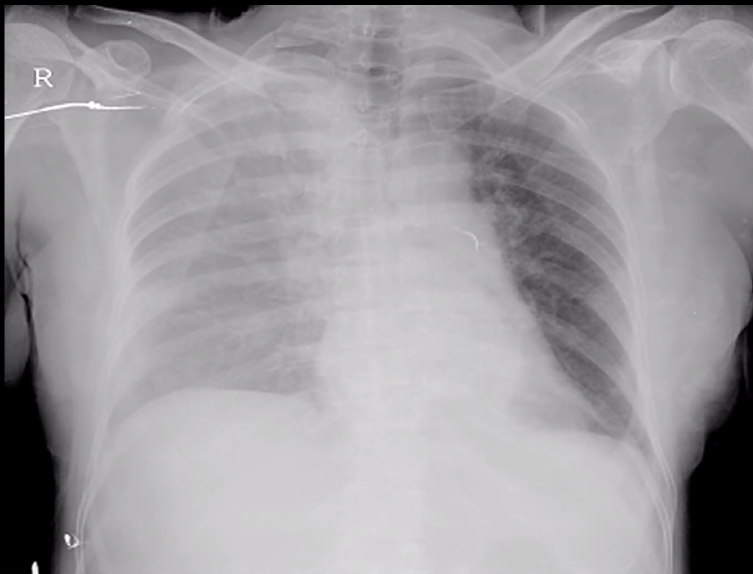
- Hæmothorax 18-06-2020 09:30
- Det er blod.
- Det er rygleje nok, så kan man ikke se væskespejl.
rtg bækken
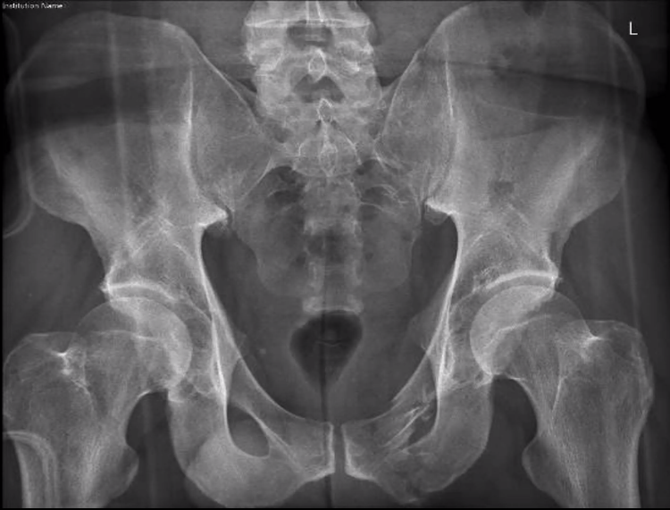
- Følg ringen rundt og find frakturen. Fraktur altid x 2 på ring.
Ultralyd (e)FAST
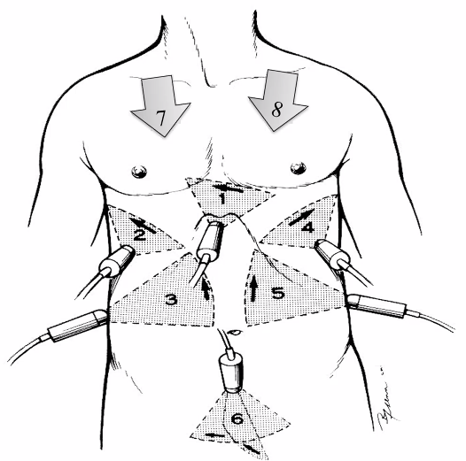
- 18-06-2020 09:32
- Man kigger efter fri væske = BLOD
- Rimelig hurtigt, kan køre det flere gange.
Hæmorhagisk shock / hypovolæmisk
- STOP BLØDNINGEN
- Brug hænderne.
- Bækkenslynge
- Tranexamsyre
- Kan gives præhospitalt
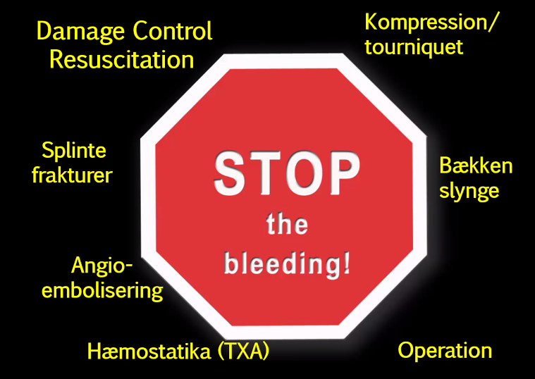
- Splitefrakturer
- ???
- Bækkenslynge
- Det skal man træne
- Pointen: Dumt at kalde bækkenslynge, det er en trochanter-slynge
- Midterste punkt over trochanter
- Tourniquet
- Stang og snor.
- Proximalt før skade, lægger man tryk på, så arterier blokkes
- Obs nekroser distalt for (men det skal være noget tid?)
- Skulle være vældig godt til ekstremitets
- Alle soldater har tourniquet
- De har godt bodyarmour, så ikke thorax. Øget overlevelse
- Blødning fra store rørknogler
- Reponerer brud.
- Gendanne anatomien.
Vigtigt ved prim gennemgag
- Shock?
- Blødning?
Case forsat - sort
BT 80/40 p130 Hvad skal vi gøre nu? Til OP.
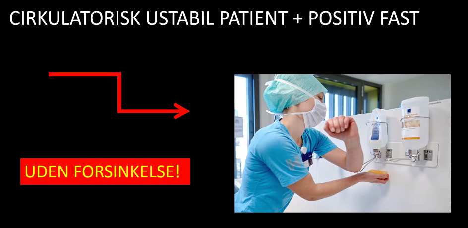
Stabil patieint
- BT 110/76 p 95
- Så skal man ikke lave fast? 18-06-2020 09:42
- Stabil PT > Så skal der laves en CT-skanning
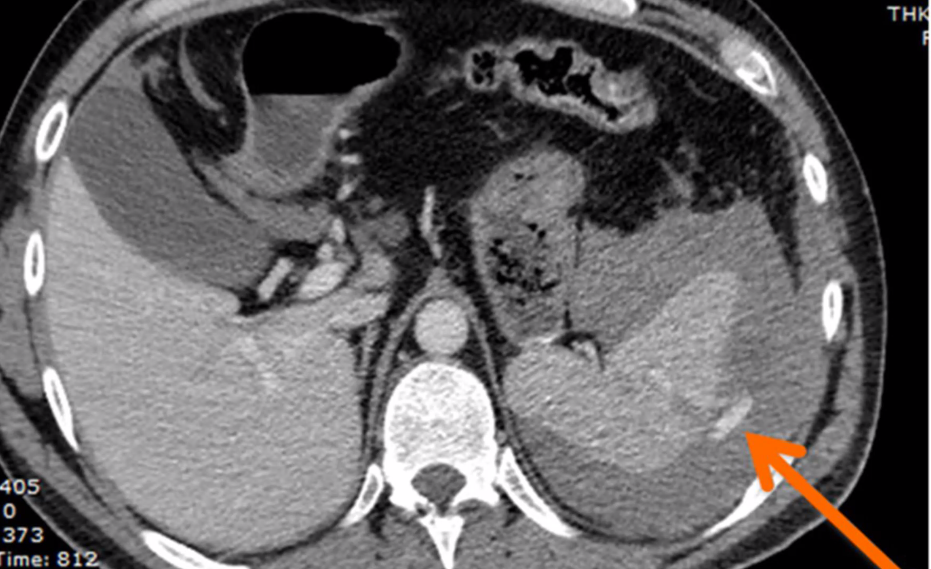
Case sort. Milt blødning
- Man kan sætte coils for at stoppe blødning på stabile patienter. Smart..
Hvilke stabile/ikke-shockerede patienter skal laparotomeres?
- STUMPT
- fri luft
- peritoneal
- Måske:
- Fri væske uden organlæsion
- ekstravasation … eller.
- PENETRERENDE
- Som udgangspunkt alle skud
- Eviceration 18-06-2020 09:46 ? [TODO: HVAD BETYDER Eviceration]
- Penetration af fascie!
- Laparoskopi
- Det er en kirurg der stille OP-indikation - så ovenstående nok ikke så vigtigt.
Spørgsmål 18-06-2020 09:48
- Noget med eFAST..
- Hvem er traumeteamet?
- Alle hospitaler med traumemodtagelse har en beskrive af traumeteamet
- Neurogent shock 18-06-2020 09:53
- Jo højere oppe, jo mere udbredt er påvirkningen.
- Neurogene shock = kredsløb-ting, således at perifære vasodilatation.
- Hvis I skal ende på neurogen shock diagnose, så skal I have udelukket de andre former for shock.
- Kan være commotio af medulla som ikke kan ses på skanning.
Hovedbudskader
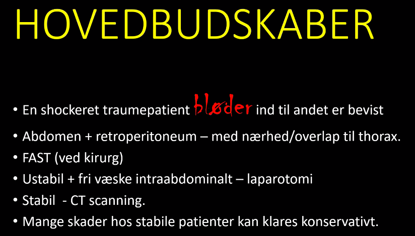
HOVEDBUDSKABER
- En shockeret traumepatient bløder ind til andet er bevist
- Abdomen + retroperitoneum — med nærhed/overlap til thorax.
- FAST (ved kirurg)
- Ustabil + fri væske intraabdominalt — laparotomi
- Stabil - CT scanning.
- Mange skader hos stabile patienter kan klares konservativt.
- konservativt = man opererer ikke pt, men observere.
Slut på anden time
Case blå
- En 58-årig stilladsarbejder falder fra 2. sals højde
- På skadesstedet har patienten GCS score = 12
- Spinal stablisering i vakuummadras
- IV adgang, smertestillende (fentanyl)
- …bringes til Akutmodtagelsen
- Ankommer 90 minutter efter traumet
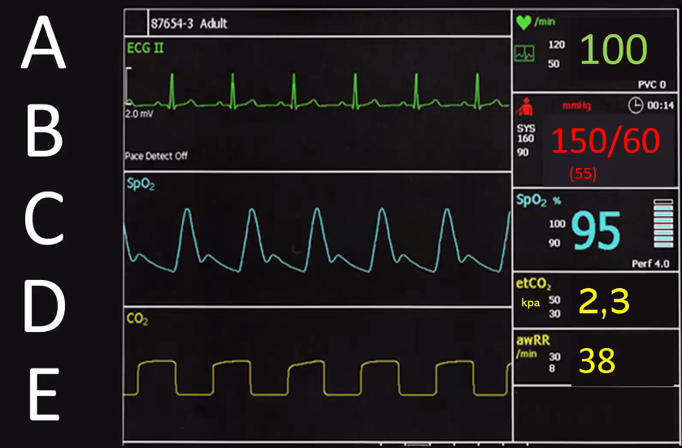
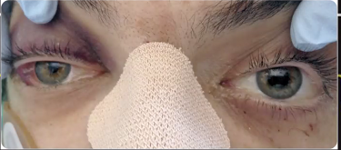
- Pupildifferens. Inkarcerere?
- BT?
- Høj sys, lav dia?
- Revurderes ABCDE ved ankomst.
- C-problem?
- D-problem?
- -> A-problem.
A-håndtering
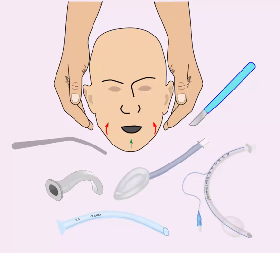
- Helt normalt ung mand
- Skæg
- Slank mand
- Ingen åbenlyse skader.
- Frie luftveje - det enkelste først.
- Skabe frie luftveje med hænder
- Chinlift = hageløft?
- Jaw trust. = kæbeløft? *
- Sug?
- Nakkeproblemer hvis landet på hovedet?
- Obs skadesmekanisme! Nakkebevægelighed.
- Nasal airway
- Kontraindiceret v/ Basisfraktur/ansigtsfraktur -
- så kan den ryge ind i hjernen!
- Kontraindiceret v/ Basisfraktur/ansigtsfraktur -
- Oropharangyal airway
- Ja, så kan vi lige så godt intubere dem..
- Intubation - ring til en ven...
- Noget man godt kan:
- Supraglottisdevice: larynxmaske. forskellige devices som ikke er endotrakeale devices. Så ikke en helt sikkerluftvej.
Neurokirurgiske snak.
- D-problemer - pupillerne er bekymrende
- Måske havde han det før han faldt? Nogle har en Pupildifferens
- Gode gamle Monroe-Kellie doktrinen.
- Hjernen kan kompensere, det venøse volumen skal ud.
- Så der går noget tid før ICP stiger.
- ligeledes CSF
- Når man er længere ude på kurven, så skal der ikke så meget volumen til at sænke trykket.
- Primære hjerenskader - irreversible!
- Commotio cerebri (Amnesi/bevidstløshed < min)
- Diffus axonal skade (Amnesi/bevidstløshed > min)
- Overrivning af axon'er.
- Noget med lidt rotation. Det er klamt. Alvorlige.
- Vedvarende bevidstløshed og vegetativ status og ødemdannelse
- Kontusionsblødninger
- Mere lokalisaseret.
- Forbliver ofte i området. De første par timer lidt mere blødning
- Vi er begyndt at give lidt Tranexamsyre til det.
- Traumatisk SAH
- Sekundære hjerneskader - potentielt undgåelige - kan forebygges.
- Hypoxi/iskæmi (ABC)
- Højt ICP (EDH, aSDH, ødem, hydroceflaus)
- aSDH er det alvorligste.
- kommer ofte ind bevidstløs.
- udover ødem, så kommer blødningen og fylder. massevirkning
- 18-06-2020 10:44
- EDH: mest fokus på.
- Epiduralt - ml knogle og dura-mater
- Meninges karforsyning.
- Niels Har ikke set EDH uden kraniebrud.
- Linseformerede facon.
- Når ED-rummet spaltes, kan andre arterier overrives.
- Hvis man får fixet det i tide, så ingen men.
- DERFOR SÅ VIGTIGT - VI KAN GØRE NOGET- eller neurokir kan...
- De skal på bordet.
- EDH giver ipsilateral pupildilatation.?! [TODO: tror jeg nok]
- Man bruger nu NaCl istedet for mannitol da NaCl er lidt nemmere. Mannitol kan sive ud i vævet.
- aSDH er det alvorligste.
- Højt energibehov (Epilepsi, hypertermi)
- Hyperglykæmi (acidose)
- EDH og aSDH skal udtømmes.
GCS
- Det man skal huske - det er en koma skala
- Ikke spørgsmål om man har brækket arme og ben DET ER FUCKING HJERNEN det handler om!
- Forventes ikke man kan det i detaljer
- Et fald på 2 i GCS er signifikant og udløser en handling, fx skanning.
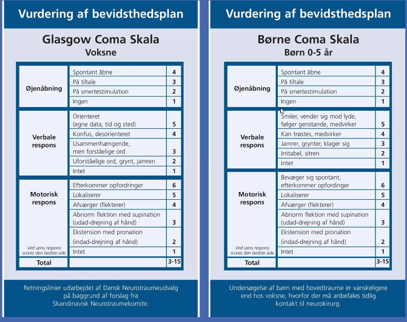
Visitaion af hovedtraumer
- Man kan kort sige der er tre udfald:
- Traumecenter (GCS < 9, dvs 3-8)
- Indlæggelse til observation > 24.
- Udskrives med mundtlig og skriftlig information
- Hellere overtriagere / overbehandle end at sende en hjem.
- Så ligger de bare og dør af cerebralt hæmatom. føj føj
Behandling af forhøjet ICP
- Operation
- Fjerne hæmatom eller kontusion.
- CSF-drænage
- Hyperton NaCl
- Elevation af hovedgærde 30 gr.
- Thiopental terapi
- Så nedsættes stofskifte.
- Kraniektomi
- Det er ikke så ukompliceret med kar og infektion.
Spørgsmål til Niels.
- 18-06-2020 11:00 forstod ikke spørgsmål
- 18-06-2020 11:04 Søren opsummere neurotraumer tror jeg i spørgsmåls sessioni slutningen af 3. time. Neurokir vil gerne kontaktes. RINg til neurokir.
CASE ORANGE
18-06-2020 11:16
- En 30-årig mand er kniv stukket i venstre side af thorax.
- Ved ankomst til Akutmodtagelsen er han udtalt dyspnøisk og klager smerter i thorax og siger at han ikke kan få luft.
- Der er ingen halsvenestase.
- St.p med nedsat respirationslyd på højre side med rungende perkussion
- Værdier
- p 120, 80/40 SAT 95, RF 45
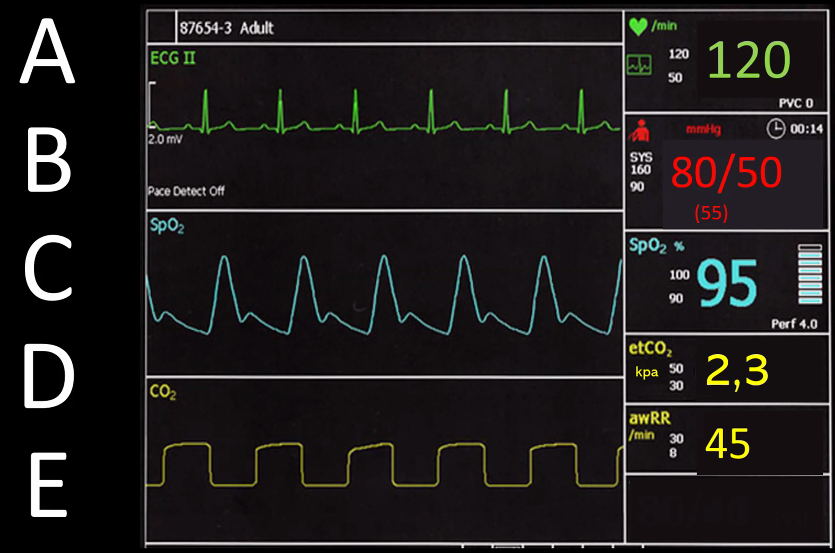
Thoraxtraumer
- BEHANDLING AF SVÆRE THORAXTRAUMER
- 85 % BEHANDLES MED DRÆN ALENE
- Typisk stumpe traumer
- OBS ofte også andre skader!
- 15% opereres.
- Typisk penetrerende traumer
- 85 % BEHANDLES MED DRÆN ALENE
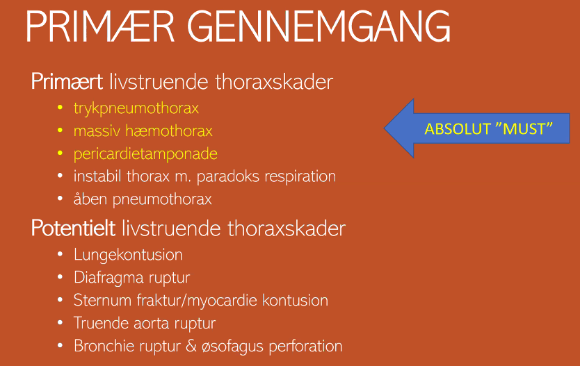
PNEUMOTHORAX
- Symptomer / klinik.
- Dyspnøe
- Smerter
- Rungende perkussionstone
- Uro 18-06-2020 11:24 [TODO: NOGET MAN KUNNE DØ AF?]
Trykpneumothorax
- Symptomer/klinik
- Dyspnøe
- Smerter
- Rungende perkussionstone
- Halsvenestase
- Angst/konfusion/bevidsløs
- Emma siger at tryk pneumothorax er en KLINISK DIAGNOSE, hvis man har et fint rtg thorax af dette, så er det en fejl..
- kan også opstår spontant.
- Nedsat venøsttilbageløb til RV, obstruktivt shock.
- Lav tryk, shockeret. STIK KANYLE/IV-ADGANG i IC2 midtklavikulært lige over overkant af IC2. (obs karnerve ligger lige under costae)
- Akut behandling
- Nåledekompression
- Fingerthorakostomi
- [TODO: wtf]
Her laver man dekompression ved Trykpneumothorax
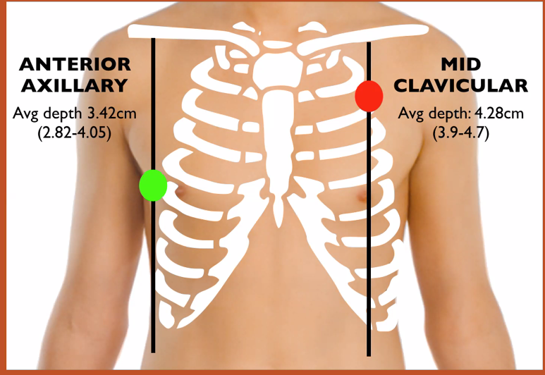
- Ved muskelfistre, så er det bedre forreste axilfold.
- Thorax-Mette synes ikke et PVK er nok. Der skal en finger til.
- Fornuftig incision. Hullet på huden større end længere i intercostalmuskulatur. Tragtformet istedet for tunnel.
- Kar-nerve ligger på underside af costa!
- Stort hul i huden, så er man en god kirurg.
- "Fingerthorakostomi"
Case orange anden dag
- En 30-årig mand er knivstukket i venstre side af thorax. Ved ankomst til Akutmodtagelsen er han udtalt dyspnøisk og klager smerter i thorax og siger at han ikke kan få luft.
- Der er halsvenestase.
- St.p normal
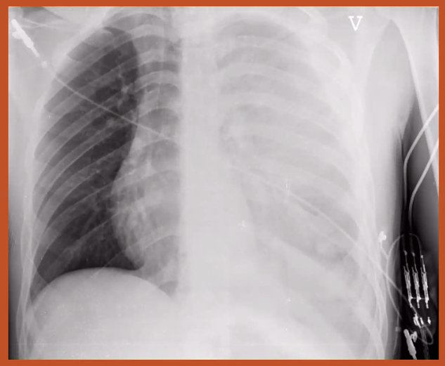
- Det er hæmothorax.
- Vi ved ikke hvorfra det kommer! Gas-kir-EMMA: Det kan også være mine steder!
- Selvom knivsbladet ikke er særlig langt, så kan de komme langt ind.
- Stik i nederste halvdel af thorax, så rammer man måske lever eller andet intraabdominalt.
Hæmoperikardium
- Klinisk diagnose
- Lavt BT
- Høj puls
- Halsvenestase
- Fjerne hjertetoner
- Akut behandling
- Trække væske ud via dræn
- Kardiolog el. radiolog
- ultralydsvejl.
- Trække væske ud via dræn
18-06-2020 11:41
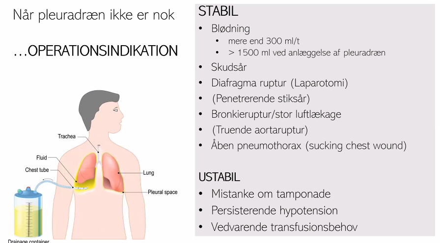
18-06-2020 11:45
- AKL: HVad gør jeg?! 18-06-2020 12:00
- Du skal erkende om der er en livstruende tilstand fra thorax. OG kan det afhjælpes emd dræn.
- Så man ikke overser nogle ting.
HOVEDBUDSKABER - Thorax.
- 85 % kan behandles med pleuradræn alene
- Erkend tidligt tryk- pneumo/hæmothorax eller pericardietamponade
- DE tre skal FIXES! HUsk dem.
- Kontakt Thoraxkirurgerne
- 24/7 fraset når der er kommet nyt Vikings-afsnit på HBO-flix.
- Akut thorakotomi kun ved ustabil pt og penetrerende traumer
- Abdominalkirurgerne skal også klare det basale thoraxkirurgiske
- og næstefter ortkir
Slut 4. time
Sidte 45 min
- Sidste 2 cases
- Tævrgående cases
- De vigtige points kommer nu
Case GUL
- Du er ortopædkirurgisk forvagt og er blevet kaldt ned i akutmodtagelsen for at se på en patient som din kollega er lidt bekymret for
- 82-årig mand kendt med HA, Parkinson og let demens
- Faldet ned ad trappe 6-8 trin
- Fundet af datter
- Alkohol
- Indbragt af ambulancen til skadestuen UDEN traumekald for 4 timer siden
P130, BT 110/70, SAT 95, RF 38 Rtg thorax
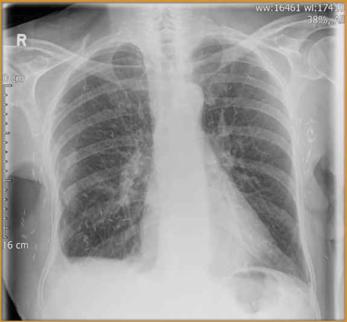
- 18-06-2020 12:18
- Udslettet sinus på hø.
- Costafraktur, der er konturspring
- Ældre msk skal bare snuble lidt, brækker de alle ribben.
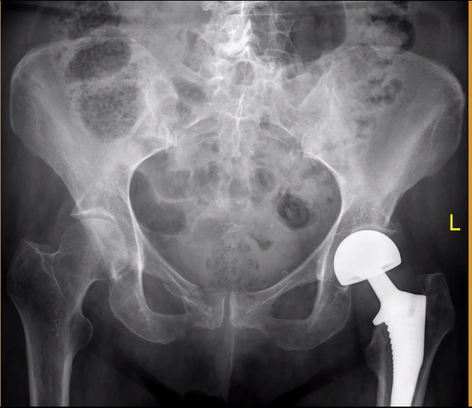
- Han har en protese.
- Følger inderste og yderste ring
- Der er konturspring.
- Bløder det meget? Lige den gør nok ikke. Men en bækkenfraktur kan bløde
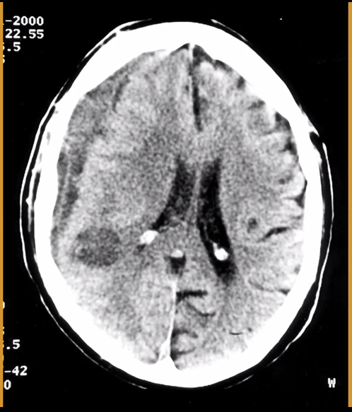
- Der er SDH, det følger hjernes, ikke LINSEFORMERT. Lidt af ældre dato. Det er ikke hle hvidt. Kronisk fase.
- DEr er god plads derinde.
Risikoprofil for ældre
18-06-2020 12:23
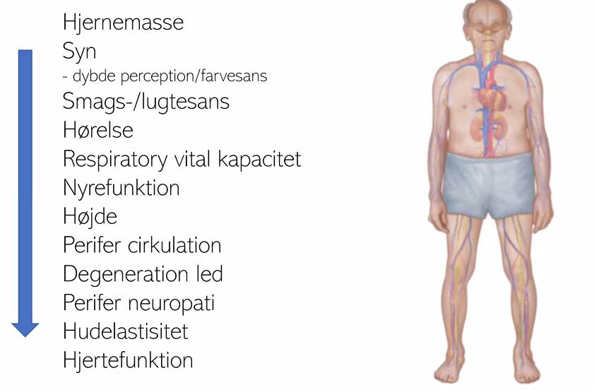
- Den store pil gælder for alle punkterne.
- Det hele bliver bare dårligere når man bliver gammel
- Alle disse ting påvirker traumepatienten som sådan
Traumer hos ældre
- Fald
- Alkohol
- Brandsår
- De sidder og ryger i deres senge.
- Forgænger
- Biluheld
- pga dårlig syn og sanser.
- bilerne er billige og usikre.
- elcykel med for meget fart på. Det kan Niels Neuro ikke lide.
- Det der ville være banalt hos yngre, kan for ældre være pisse farligt.
- Samme ABCDE-tilgang
- Samme udredning
- Men så skal I tænke jer om. Mange gamle ... degeneration af lungerne. de har betydelig nedsat lungefunktion?
- Hele thorax kan være knust
- Ældre kan ikke kompensere.
- for et par costafrakturer
- blomstende lungekontusion
- så dør de
- opmærksomhed..
- Degenerative forandringer i columna der øger risikofor høje medullære skader
- De tager deres piller
- Alt. Antihypertensiov
- De tager det hele
- Betablokkere
- Antipsykotika
- Antidiabetika
- Kortikosteroider
- AK
- Ikke ubetydelige problem
- Selv mindre hovedtraume på ældre i AK-behandling, det kan bre være EL siger de er over 65. Børnemagnyl lyder harmløst.
- Derfor skal man indlægge ALLE i AK-behandling ved selv mindre hovedtraumer.
- En pågående blødning vil først ses efer længere tid
- DE skal ind og observeres
- Ring til blødningsvagter i RegSP.
- Emma: Dem i AK-behandling, miltskader
- hvis man er i AK, så er det kontraindikation for konservativ beh. af miltskade
Take home - Trauma hos ældre er et betydeligt problem
- Banale traumer kan medføre betydelige skader
- overses ofte !
- Behandlingen følger ABCDE-principperne
- … men tilrettes anatomiske, fysiologiske og kroniske patofysiologiske ændringer
- Ofte vil de blive indbragt uden traumekald, og derfor vil I som KBU være de første der ser dem, og så skal udløse TRAUME-kald.
- Overlægerne vil blive pisse sure, men det er godt for fru hansen.
- Så bliver de systematisk gennemgået
Case grøn.
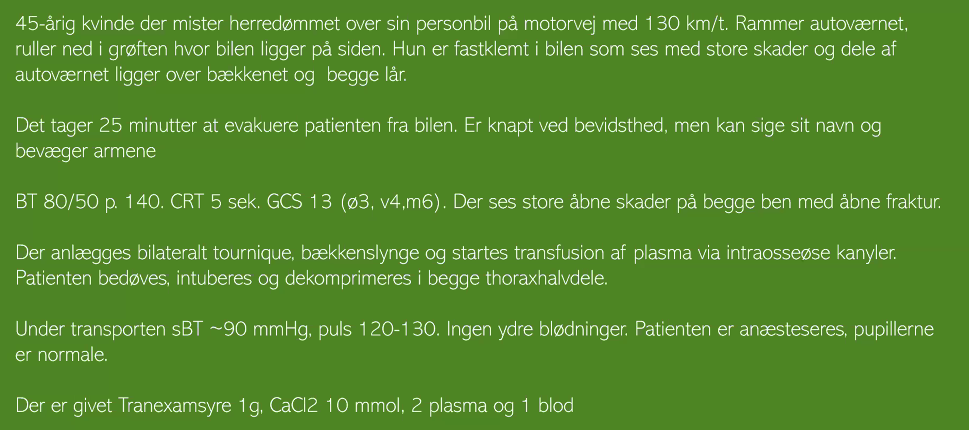
- VEd ankomst raumecenter
- p130 bt 80-40 sat 95 RF 12
- Læger overså brækket hals
- Man har afskaffet stiv halskrave
- SPneboard. vakuumboard.
- 18-06-2020 12:43
Spinalstabilisering
- Igennem mange år.. rådent æg. man kunne aldrig vide. høj medullært skade. ikke forværres.
- Meget tid på cervikalcolumna er ikke godt.
- Litteraturen er gennemgået
- I danmark er vi gode
- Sådan skal vi nu håndtere spinal
- Hovedessen:
- Vi bruger ikke halskraver mere præhosp el. i modtagelse.
- medmindre helt særlige forhold
- Vi skal stadig passe på cervikale colm.
- Vi holder på deres hoved
- Ankommer typisk på device.. Spineboard (ikke så meget mere), vakuummadras, scoopboard
- Når de ankommer overflyttes de til traumatransferboard
- Vi bruger ikke halskraver mere præhosp el. i modtagelse.
- Hovedessen:
Flowchart for hvordan man kan tage billede hvem og hvordan.. kig i NKR spinal stab.
Back to green patient
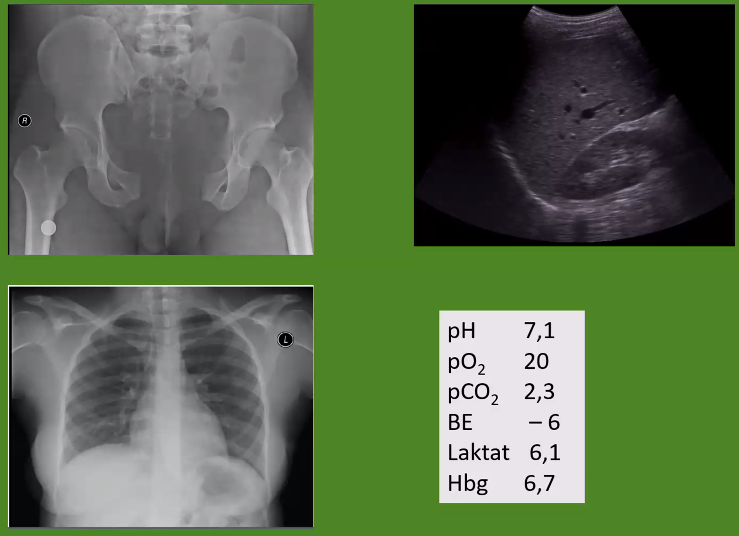
- Bækken er ikke godt
- Man vil bare trykke det sammen.
- Hvad er der bag leveren?
- Viking-Mette er ikke bekymret for rtg thorax.
- FAST
- Måske lidt blødning, vi er ikke sikre.
- MT-kir: DET ER NORMALT
- A-ptk
- Kæmpe acidose
- Lav pCO2
- Laktat 6
- Shock-pt.
- Damage Control Resuscitation
- Stop blødning (Damage control surgery)
- Hypotension
- Permissiv hypotension? Så det ikke pis bløder endnu mere
- sBT 90 / MAP 60
- Traumatisk hjerneskade: så vil vi gerne have BT højere.
- Isoleret hovedtraume: Så har man skanning, så har man ikke .. bla bla bla. 120. ligemeget.
- Blodprodukter
- Akut transfusionspakker
- RBC, plasma, Trombocytter, (5:5:2 el 4:4:2, men 1:1:1)
- Pointe: tilnærmet normalt blod.
- Kræver flere IV-adgange
- OG så skal der mølles ind.
- 2-2,5 L i sådan en pakke.
- RBC, plasma, Trombocytter, (5:5:2 el 4:4:2, men 1:1:1)
- Akut transfusionspakker
- Hæmostase monitorering
- Det skal I ikke vide noget om til eksamen.
- TEG og ROTEM.